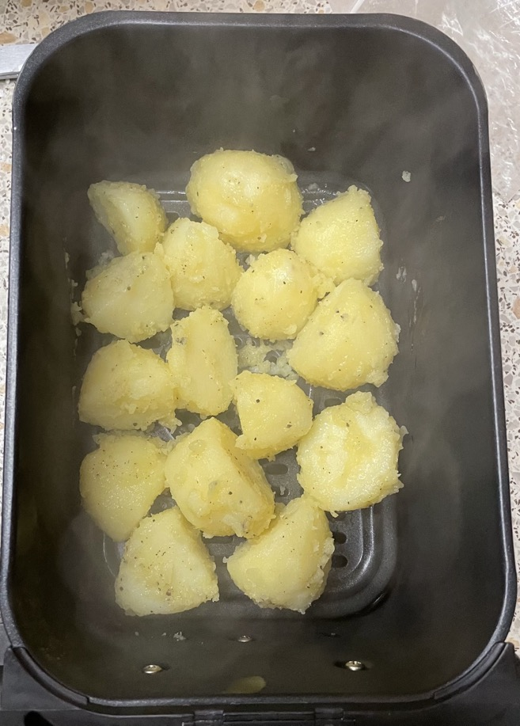

Roast potatoes
- Preheat oven to 210°C
- Do not overboil or will go to mash
Parcook
- Cut potatoes into 1-2" pieces
- Cover with salted cold water to 1" above
- Bring water to boil then reduce to simmer
- Simmer for 10 mins until cake tester goes through with little resistance
- Drain and transfer to large bowl
Roasting
- Toss potatoes well with
- Transfer to tray lined with baking paper
- Roast at 210°C until golden
- Oven: 25 mins, rotating tray halfway
- Air fryer: 19 mins
- Potatoes are done when they lift off surface without sticking, cook in extra 3 min intervals till done
Notes
- Less than 200°C and potatoes will not go golden
- A messy surface is good after tossing in oil for a crispy exterior
- Parboiling prevents moisture coming out of the roasted potatoes making coating soft
- Boil too much and potatoes may overcook
Pics
210°C - 500g - 19 mins
